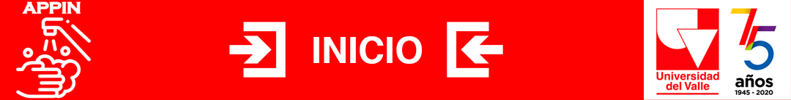

<ion-header>
  <ion-toolbar>
    
  </ion-toolbar>
</ion-header>
<ion-content>
 <div class="notificaciones">
   <label>
      <ion-badge style="color: white; background: red;" routerLink="/alertas">{{cantNotificaciones}}</ion-badge>
      <ion-icon name="notifications-outline" slot="end" size="large" class="notificaciones" routerLink="/alertas" color="dark"></ion-icon>
   </label>
 </div> 
<div class="container">  
  <h4 class="title">Hola, {{nombreUsuario}}</h4>  
  <div class="subtitle" *ngIf="fechaUltimoLavado !=null">    
    <label class="subtitle" style="text-align: center;">Tu último registro de lavado de manos fue<br>
      el {{fechaUltimoLavado | date : 'dd/MM/yyyy'}} {{hora}} </label>
  </div>
  <div class="subtitle" *ngIf="fechaUltimoLavado == null">    
    <label class="subtitle" style="text-align: center; color:red"><b>!No registras lavado de manos en las ultimas 24 horas!</b><br>
    </label>
  </div>
  <br>      
  <div>
    <ion-button class="sintomas" size="small"  color="danger" (click)="ingresarPaginaRegistroSintomas()">Registrar sintomas</ion-button>
    <br/>
    <ion-button color="danger" size="small" class="sintomas" (click)="ingresarPaginaLavadoManos()">Registrar Lavado&nbsp;&nbsp; <ion-icon name="hand-left-outline"></ion-icon> </ion-button>
  </div> 
  <br>
  <br>
  <br>
  <label>&nbsp;</label> 
</div>
</ion-content> 
<ion-content>
<div>
  <ion-tabs>
    <ion-tab-bar slot="bottom">
      <ion-tab-button color="danger" (click)="ingresarPaginaEstadisticas()">        
        <ion-icon name="bar-chart-outline" color="danger"></ion-icon>
        <ion-label>
          Datos
        </ion-label>        
      </ion-tab-button>
      <ion-tab-button color="danger" (click)="ingresarPaginaRegistroSintomas()">
        <ion-icon name="thermometer-outline" color="danger"></ion-icon>
        <ion-label>Sintomas</ion-label>
        <ion-badge color="danger">39°</ion-badge>
      </ion-tab-button>  
      <ion-tab-button  (click)="ingresarPaginaLavadoManos()">
        <ion-icon name="hand-left-outline" color="danger"></ion-icon>
        <ion-label>Lavado</ion-label>
      </ion-tab-button>  
      <ion-tab-button (click)="ingresarPaginaCuidados()">
        <ion-icon name="accessibility-outline" color="danger"></ion-icon>
        <ion-label >Cuidados</ion-label>
      </ion-tab-button>
    </ion-tab-bar>
  </ion-tabs>
</div>
</ion-content>